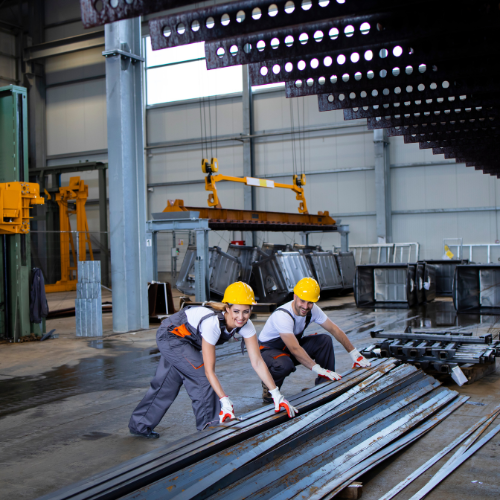
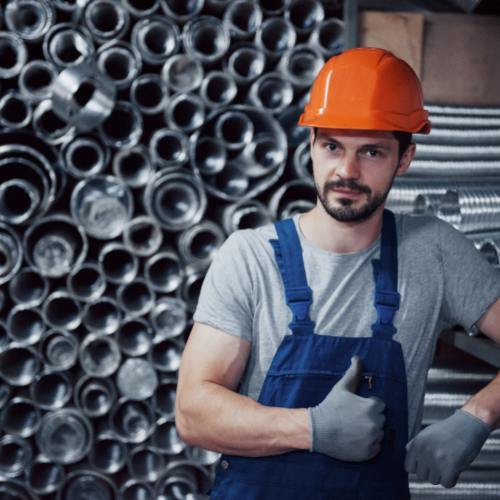
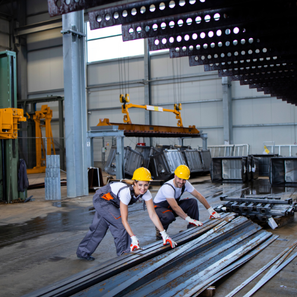
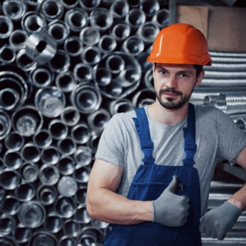

Sobre Nós
Desde sua fundação em 1975, a Ferrominas segue uma trajetória de sólido crescimento, impulsionado pela combinação de produtos de qualidade, atendimento qualificado, preço competitivo e compromisso com todos os clientes, fornecedores e colaboradores. Iniciamos nossas atividades revendendo Vergalhões e, posteriormente, cimento e materiais de construção em geral, especializando-se na distribuição e produção de ferro e aço. Hoje possuímos uma grande área construída, onde estão disponibilizados para pronta entrega uma diversificada e completa linha de produtos com a qualidade garantida e preço competitivo. Em nosso mix de produtos, contamos com diversos tipos de aços longos, planos, laminados, telas, perfis, barras, cantoneiras, portas automáticas e telhas galvanizadas, galvalumes, translúcidas e isotérmicas em PIR, tecnologia recém-adicionada ao nosso portfólio e que já é sucesso de vendas em todo o território mineiro.
A empresa conta com frota própria visando garantir uma entrega em tempo recorde e segura. Com sede em Ubá, e vendedores que cobrem toda a Zona da Mata Mineira, a empresa tem a garantia do melhor atendimento e a entrega mais rápida desta região. Visando atender melhor nossos clientes e com a intenção de oferecer uma maior variedade de produtos, fundamos a Ciatel em 1999, uma empresa fabricante de telhas e calhas galvalumes, que segue evoluindo seu maquinário e seu mix de produtos, garantindo um ótimo custo-benefício aos nossos clientes. Em 2013, nosso grupo entrou no segmento de fabricação de tubos industriais (redondos, oblongos, quadrados e retangulares), perfis estruturais, bobinas, slitters e chapas planas, com a inovadora Ferrominas Perfilados. Tudo isso para oferecer a você, nosso cliente, a garantia de qualidade e melhor preço de quem é fabricante.
Nossa Missão
Nossa Missão é criar um vínculo forte com nossos clientes, facilitando suas operações na Construção Civil, Construção Metálica e Industrial, oferecendo soluções em ferro e aço de forma eficiente, com qualidade, entrega em tempo recorde e atendimento personalizado pelo nosso timaço de consultores e vendedores.
Nossa Visão
Nossa Visão é ser referência estadual na distribuição de ferro e aço em larga escala, com sustentabilidade ambiental e contribuindo com a economia da nossa comunidade.
Nossos Valores
Ao longo desses anos, construímos nossa história em sólidos princípios, que sempre nortearam as nossas relações com o mercado, com os clientes, com nossos fornecedores, colaboradores e nossa comunidade. Esses princípios sempre estiveram presentes em todas as nossas operações e são a base de toda a nossa estrutura. Trabalhamos para gerar valor e compartilhar sucesso com todos aqueles com quem nos relacionamos, sempre tendo em vista os nossos valores.
Conte com uma equipe sempre pronta para fazer o melhor por você
 


